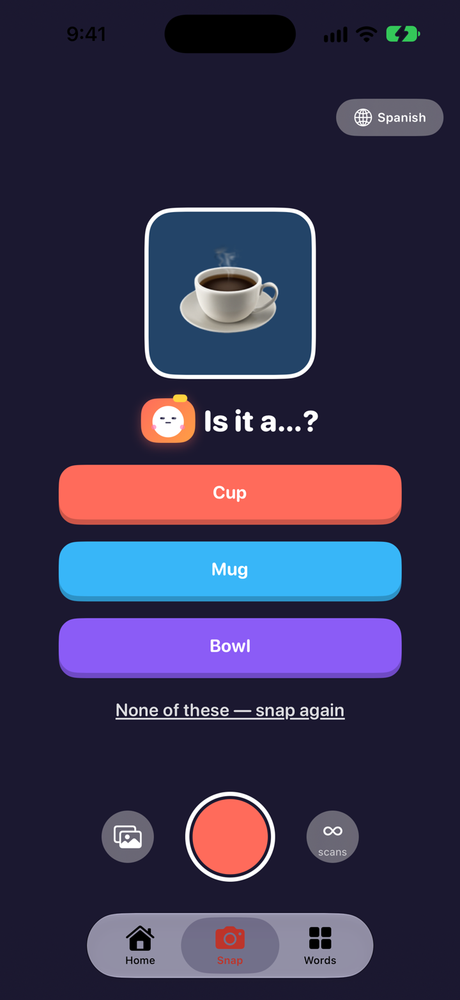
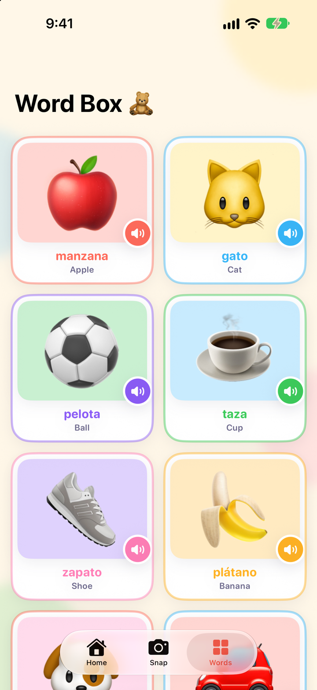

Words for little explorers
Your child points the camera at a cup, a cat or a banana, and Snappy, the friendly camera, says its name in a new language, with easy pronunciation, short sentences and a fun fact to talk about together.
How it works
Snap anything
Point the camera and tap. Snappy recognises the object and names it in the language you chose, with the word written big, how to say it, two short sentences and a fun fact.
Hear it, say it
Tap to hear the word as often as you like, then say it back. Speech recognition listens in the language your child is learning and cheers them on.

Keep it
The Word Box saves each snap as a card with its photo, grouped by day. Flip through them together, replay the sound, and watch the collection grow.

Talk about it
A gentle tutor asks a simple question or two about the word, in short, friendly messages. A daily goal ring and a snap streak keep the habit going, a few minutes at a time.
Languages
Choose what your child is learning; Snappy explains in your family's language. The app itself is in English, 简体中文, Español, Português (Brasil), Français, Deutsch, Italiano, Tiếng Việt, ไทย and Bahasa Indonesia.
For parents
A short setup asks what your child is learning and how many minutes a day feels right, then turns that into a daily goal with an optional reminder. No ads. Photos are only used to name the object in them, and nothing needs an account.
Try 3 snaps free. Lookoo Pro, a subscription, unlocks up to 30 snaps a day, an unlimited Word Box and chats with Snappy. Manage or cancel any time in your Apple ID settings.
English, Spanish, French, German, Japanese, Chinese and Korean. The explanations, sentences and fun facts come in the app's language, one of ten.
You can try 3 snaps free. Lookoo Pro, a subscription, unlocks up to 30 snaps a day, an unlimited Word Box and chats with Snappy. There are no ads.
A photo is only used to name the object in it. There are no ads and no account.
Under the card you'll see "Not right? Is it a…" with the other two guesses. Tap one and the lesson switches, without using another snap.
Young children learning their first words in a new language, with a parent setting the daily plan. Older learners enjoy it too.
Email bestappsclub@gmail.com.